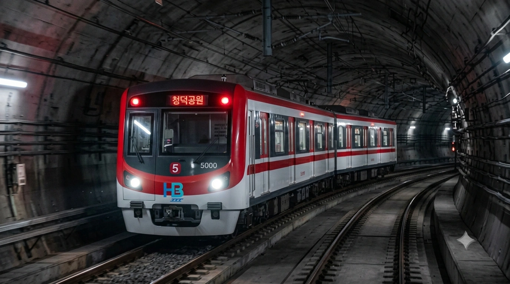
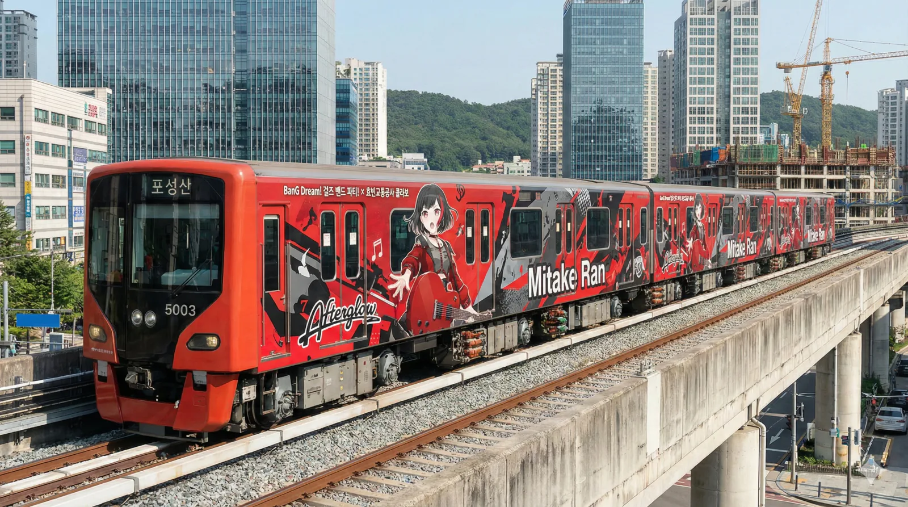
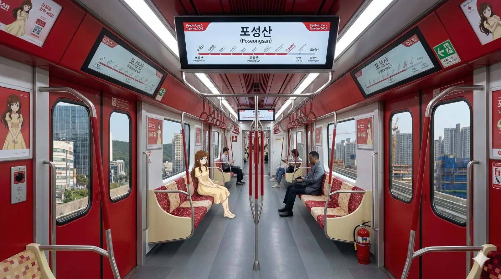
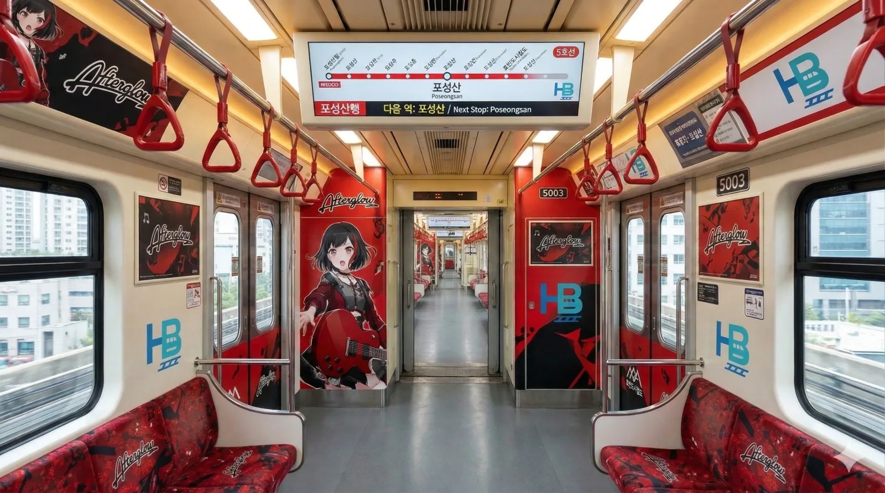
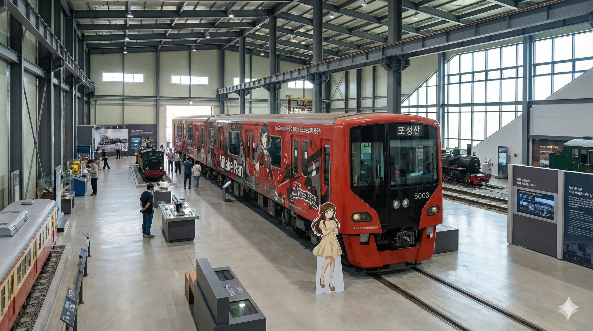

"붉은 섬광, 효빈의 첨단 무인 경전철"
경전철인데 5량이나 달고 다니는 근육돼지
태어날 때부터 오타쿠 열차
효빈교통공사가 효빈 도시철도 5호선에서 운용 중인 경전철 차량이다.
2011년 5월 8일, 5호선 개통(청덕공원~포성산)과 함께 도입되었다. 노선 색상은 빨간색(#EE0022)으로, 효빈시 노선 중 가장 강렬한 색상을 자랑한다.
차체는 작지만 철제차륜 AGT 방식을 채택하여 일반 중전철 못지않은 주행 성능을 보여준다. 보통 경전철이 2량~4량으로 운행되는 것과 달리, 효빈 5호선은 수요 예측을 반영하여 5량 1편성이라는 파격적인 조성을 채택했다. 덕분에 '미니 지하철' 같은 느낌을 주며, 수송력도 경전철 치고는 상당히 높은 편이다.
특히 다른 호선 전동차들과 구분되는 가장 큰 특징은, 전 차량이 효빈교통공사 공식 마스코트 캐릭터 미소하 래핑을 기본 사양으로 달고 출고되었다는 점이다. 단순한 이벤트성이 아니라 아예 도색 자체가 미소하 래핑으로 고정되어 있어, 효빈교통공사의 무서운(?) 캐릭터 사랑을 엿볼 수 있다.

▲ 어두운 터널 속을 가르며 달리는 5000호대의 강렬한 전두부. 특유의 빨간색 도색이 마치 레이저 섬광처럼 빛난다.
효빈 도시철도 5호선의 모든 차량은 현재 청덕차량사업소에 배속되어 있으며, 추후 연장 시 하미차량사업소가 추가될 예정이다.
"도심 속의 비밀 정원"
5호선 기점인 청덕공원역과 바로 연결된다. 청덕공원 지하에 숨겨져 있거나 자연 친화적으로 설계된 탓에, 공원 산책로에서 기지 내부가 살짝 내려다보이는 '히든 뷰 포인트'가 있다.
주의: 이름이 비슷해서 2호선(또는 3호선)의 청덕역과 헷갈리는 경우가 많은데, 이곳은 청덕역과는 전혀 무관한 곳이다.
"오니나츠의 꿈이 서린 곳"
5호선이 하미역까지 연장되면 신설될 예정인 기지다. '하미(夏美)'라는 지명이 애니메이션 러브 라이브! 슈퍼스타!!의 등장인물 오니츠카 나츠미의 이름 한자와 똑같다는 이유로 성지순례 예고지가 되었다. 5호선 상징색(빨강)과 나츠미의 이미지 컬러가 비슷해 "오니나츠 전용기지"라고도 불린다.


▲ 5000호대의 표준 사양인 미소하 래핑 열차 내부. 붉은색 시트와 미소하의 일러스트가 완벽한 조화를 이룬다.
효빈교통공사의 '오타쿠 친화 정책'이 극한에 달했다는 것을 여실히 보여주는 공간이다. 5000호대의 내부는 일반적인 상업광고판 대신, 공식 마스코트 미소하의 일상 일러스트와 정책 설명 만화로 도배되어 있다. 시트 역시 노선 상징색인 강렬한 붉은색에 베이지색 패턴을 조합하여 굉장히 세련되면서도 서브컬처적인 분위기를 풍긴다. 특히 출입문 상단의 와이드형 LCD 안내기에는 미소하가 직접 역을 소개하는 특별 UI가 적용되어 있다. 처음 탔던 일반 시민들은 "내가 잘못 탄 건가?" 하고 당황하기도 했지만, 지금은 오히려 이 '미소하 전용석'을 찾아 앉는 사람들이 많아졌다. 가끔 열차 내 질서 유지를 당부하는 방송이 나올 때 미소하의 나긋나긋하면서도 뼈를 때리는 '팩폭 멘트'가 흘러나와 승객들을 피식하게 만드는 숨겨진 이스터에그가 가득하다.

▲ Afterglow 미타케 란 특별 편성의 내부. 블랙과 레드의 조합, 일렉트릭 기타 모티브가 강렬하다.
효빈교통공사가 BanG Dream! 프로젝트와 공식 협약을 맺고 내놓은 '미타케 란 특별 래핑 편성'의 내부는 그야말로 록 밴드의 공연장 대기실을 방불케 한다. 외부는 물론 내부까지 Afterglow의 상징색인 검은색과 붉은색의 조합으로 완전히 뜯어고쳤으며, 통로문 양옆에는 란이 붉은색 깁슨 레스폴 기타를 들고 있는 대형 일러스트가 위압감 있게 자리 잡고 있다. 손잡이 역시 일반적인 하얀색이나 회색이 아닌 핏빛 붉은색으로 맞춤 제작되었다. 이 열차가 처음 본선에 투입되던 날, 효빈시뿐만 아니라 전국 각지에서 몰려든 오타쿠들로 인해 첫차부터 승강장이 록 페스티벌 급으로 터져나가는 초유의 사태가 발생했다. 역에 정차할 때마다 란의 성우인 사쿠라 아야네의 목소리로 "다음 역은 포성산, 포성산. 다들, 평소대로(いつも通り) 내릴 준비 해."라는 안내방송이 울려 퍼져 승객들의 심장을 폭행했다는 전설적인 일화가 내려온다.

▲ 대형 철도박물관 실내에 보존 전시된 5003호 란 래핑 열차와 미소하 등신대.
5000호대 중에서도 유독 파란만장한 역사를 자랑하는 5003편성은 현재 본선 운행을 마치고 거대한 실내 철도박물관의 메인 홀에 영구 보존 전시되어 있다. 증기기관차와 구형 전차들 사이에 최신형 AGT 경전철이, 그것도 새빨간 미타케 란 래핑을 두른 채 떡하니 놓여있는 모습은 초현실적인 웅장함을 자랑한다. 열차 바로 앞에는 5호선의 팩폭 마스코트 미소하의 실물 크기 등신대가 세워져 있어 관람객들의 필수 포토존으로 자리 잡았다. 이 열차가 이토록 특별한 대우를 받는 이유는 단순한 콜라보 열차여서가 아니다. 과거 5호선 백지화 사태 등 효빈시 철도망이 풍전등화의 위기에 처했을 때, 시민들이 자발적으로 모금 운동을 벌여 지켜낸 '초도 편성' 중 하나였기 때문이다. 이 붉은 열차는 단순한 오타쿠 굿즈를 넘어, 시민의 발을 지켜낸 승리의 상징으로 박물관 가장 빛나는 자리에 안착하게 되었다.
5000호대는 작고 아담한 경전철의 탈을 쓰고 있지만, 컴컴한 터널 속에서 마주치면 등골이 오싹해지는 특유의 포스가 있다. 강렬한 붉은색 전두부에 박힌 고휘도 LED 전조등이 쌍심지를 켜고 달려오는 모습은 마치 에반게리온 2호기나 건담의 붉은 혜성이 터널을 뚫고 돌진하는 듯한 착각을 불러일으킨다. 특히 무인운전 특성상 맨 앞 유리가 통창으로 뚫려 있어, 터널 작업 중이던 보선원들이 시운전 중인 5000호대가 갑자기 코너를 돌아 나타났을 때 그 시뻘건 형체에 식겁해서 주저앉았다는 웃지 못할 썰이 돌기도 했다. 제3궤조가 아닌 강체 가선 방식을 쓰기 때문에 스파크도 거의 튀지 않아, 칠흑 같은 어둠 속에서 소리 없이 미끄러져 들어오는 이 '붉은 섬광'은 철도 동호인들 사이에서 가장 박력 있는 지하철 등장씬으로 꼽힌다.
효빈시 역사상 가장 추악한 쓰레기 시장이자 만악의 근원인 윤대환에 대한 이야기를 빼놓고는 이 붉은 5000호대를 논할 수 없다. 이 부패한 작자는 오직 자기 일가 기업인 '두청운수'의 똥색 버스 독점과 요금 폭리를 유지하기 위해, 착공을 눈앞에 두었던 5호선 프로젝트를 전면 백지화하려는 극악무도한 짓을 저질렀다. 그는 "5량짜리 경전철은 혈세 낭비다"라는 궤변을 늘어놓으며 당시 발주 단계였던 5000호대의 제작을 강제로 취소시키려 했다. 만약 이 악마의 음모가 성공했다면 우리는 이 아름다운 붉은 열차 대신, 에어컨도 안 나오는 두청운수의 가축수송 버스에 갇혀 질식사하고 있었을 것이다. 하지만 분노한 청덕지구 주민들과 시민단체의 피 튀기는 결사 항전, 그리고 윤대환의 몰락 덕분에 5호선은 기적적으로 부활했다. 지금 당당하게 철로를 달리는 5000호대는 윤대환의 그 더러운 야욕을 산산조각 내고 승리한 효빈 시민들의 자랑스러운 전리품이자, 독재자에게 내리는 가장 통쾌한 붉은 철퇴다.
완전 무인운전(ATO) 시스템의 가장 큰 수혜자는 단연 맨 앞자리 통유리창 앞을 차지한 승객들이다. 조종실 벽이 아예 없기 때문에 열차가 선로를 집어삼키며 달리는 역동적인 뷰를 파노라마로 즐길 수 있다. 이 때문에 매일 아침 출근길이나 주말만 되면 이 '명예 기관사석'을 차지하기 위한 눈치 싸움이 올림픽 결승전을 방불케 한다. 유치원생 꼬마들부터 카메라를 든 철덕, 심지어 멍때리며 힐링하고 싶은 직장인들까지 경쟁이 하도 치열해지자, 효빈교통공사 측에서는 결국 특단의 조치를 내렸다. 통유리 바로 밑에 미소하의 SD 캐릭터가 그려진 스티커로 "이 자리는 어린이 친구들에게 10분마다 양보하는 멋진 어른이 됩시다! (안 그러면 팩폭 들어갑니다)"라는 경고문을 붙여버린 것이다. 물론 그 스티커를 뻔히 보면서도 꿋꿋하게 자리를 지키는 어른이들이 여전히 많아, 결국 미소하가 스크린 밖으로 튀어나와 명치를 때려야 끝날 싸움이라는 우스갯소리가 돌고 있다.
5000호대는 가감속도가 3.5 km/h/s에 달하는, 말 그대로 '치고 나가는 맛'이 일품인 근육돼지 경전철이다. 그런데 이 무지막지한 출력의 열차가 포성산역 인근의 험난한 산악 지형과 롤러코스터 뺨치는 급구배(오르막/내리막) 구간을 만났을 때 그 진가가(혹은 공포가) 발휘된다. 평소처럼 스마트폰을 보며 대충 손잡이를 잡고 있던 승객들은, 열차가 출발과 동시에 급커브를 돌며 산을 타기 시작하면 관성을 이기지 못하고 객실 복도를 따라 강제 문워크를 시전하게 된다. 오죽하면 지역 주민들 사이에서는 "아침에 잠 깨는 데는 모닝커피보다 포성산역 출발 구간이 직방이다"라는 말이 진리로 통한다. 효빈 테마파크에 굳이 갈 필요 없이 교통카드 하나만 찍으면 매일 아침 극강의 G포스를 체험할 수 있는, 그야말로 '효빈 익스프레스 코스터'의 악명을 당당히 떨치고 있다.
5호선은 노선 특성상 출퇴근 시간대 혼잡도가 엄청나기 때문에, 5000호대의 냉방 시스템은 타 호선보다 30% 이상 강력하게 세팅되어 있다. 한여름에 바깥이 찜통더위라도 이 열차 안으로 들어오는 순간 알래스카 빙하 한가운데 떨어진 듯한 쾌적함(혹은 한기)을 맛볼 수 있다. 하지만 에어컨 성능이 너무 빵빵한 나머지, 얇은 옷을 입은 일부 승객들이 "열차가 너무 춥다, 에어컨 좀 줄여달라"며 끊임없이 민원을 폭주시키는 사태가 발생했다. 이에 빡친(아니, 지혜로운) 효빈교통공사 예산팀(a.k.a 미소하 본체)은 여름 한정 특별 안내방송을 업데이트했다. "승객 여러분, 객실이 춥게 느껴지신다면 약냉방차로 이동해주시길 바랍니다. 한여름에 겉옷도 안 챙기시고 춥다고 떼를 쓰시면, 제가 직접 엽기떡볶이 매운맛 5단계 원액을 입에 넣어드릴 수도 있어요~♥"라는 꿀이 뚝뚝 떨어지는 아기 목소리의 협박 방송이 송출된 것이다. 이 전무후무한 '매운맛 팩폭' 방송 이후, 추위 관련 악성 민원이 기적처럼 0건으로 수렴했다는 전설이 내려온다.